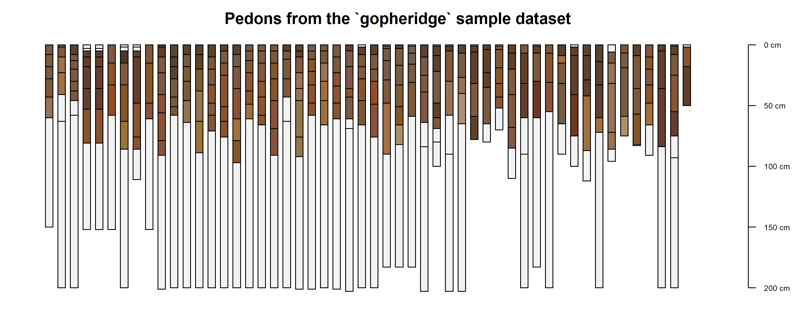
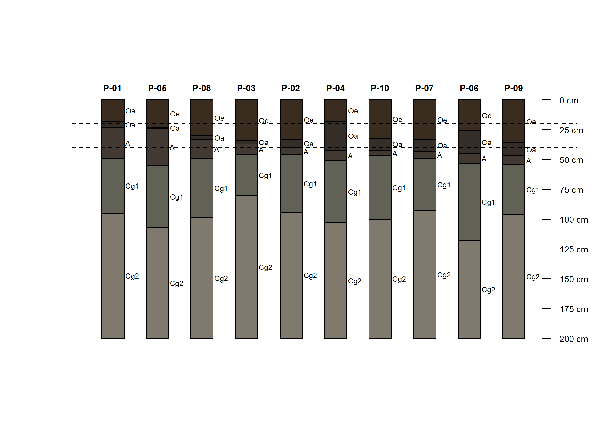
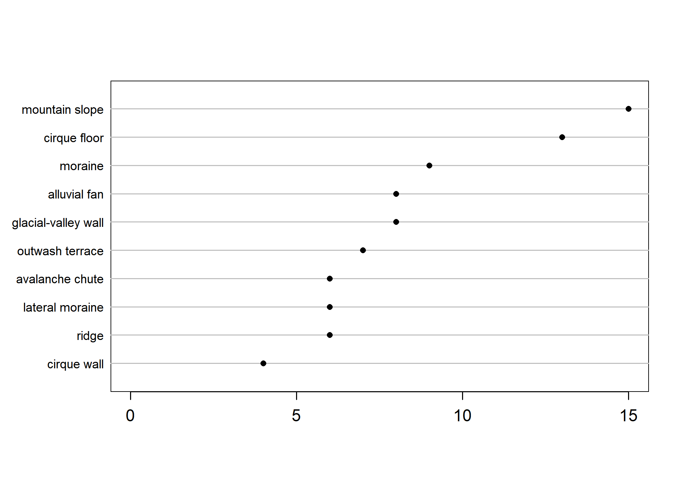
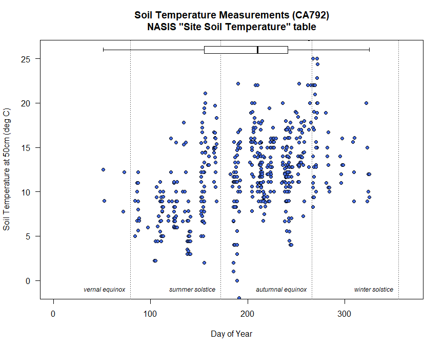

Chapter 2 The Data We Use

2.1 Objectives (The Data We Use)
- Expand on basic R skills from Chapter 1
- Inspect and work with different data types
- Perform operations on data such as filtering and aggregation
- Begin to explore regular expression (regex) patterns for text data
- Work with Soil Data Sources and Structures
- Use the soilDB package to load data into R
- Understand the SoilProfileCollection (SPC) object
- Learn about the data checks in the
fetchNASIS()function
2.2 The Structure of Soil Data
What if you could extract, organize, and visualize data from NASIS and many other commonly used soil database sources with a couple of lines of code?

The aqp (Algorithms for Quantitative Pedology) and soilDB packages enable data to be fetched from various sources and cast into a SoilProfileCollection (SPC) object. Tabular and spatial data objects fetched via soilDB and processed using aqp methods can simplify the process of working with commonly used soil data.
2.2.1 Package References
We load aqp and soilDB packages using the library() command.
The manual pages for soilDB and aqp are accessible online and from the Help tab in RStudio.
2.2.2 Importance of Pedon Data
The importance of pedon data for present and future work cannot be overstated. These data represent decades of on-the-ground observations of the soil resource for a given area.
As difficult as it may be to take the time to enter legacy pedon data, it is vitally important that we capture this resource and get these data into NASIS as an archive of point observations.

2.2.3 Some Issues With Pedon Data
Making and documenting observations of soil requires hard work. Digging is difficult, and writing soil descriptions is time consuming!
Our confidence in observations typically weakens with the depth of the material described.
- If we acknowledge this, which we must, then how do we deal with it in pedon data?
- Use a cutoff depth, for example 100 cm, can be used to truncate observations to a zone of greater confidence.
- Show the relative confidence of the data with depth.
- If we acknowledge this, which we must, then how do we deal with it in pedon data?
2.3 Challenges with Pedon Data
- Consistency
- Missing data
- Confidence in the observations
- Uncertainty with depth
- Description style differences
- Depth described, horizonation usage styles
- Legacy data vintage
- Decadal span of data
- Taxonomy updates, horizon nomenclature changes
- Location confidence
- Origin of the location information
- Datum used for data collection
- Accuracy for GPS values at the time of data collection
2.4 The SoilProfileCollection
The SoilProfileCollection class (SPC) provided by the aqp package is a specialized structure for soil data analysis. It simplifies the process of working with collections of data associated with soil profiles, e.g., site-level, horizon-level, spatial, diagnostic horizons, and other metadata.
A SoilProfileCollection is similar to the NASIS Site/Pedon “object” in that it provides generalizations, specific routines and rules about data tables and their relationships.
The SoilProfileCollection is an S4 R object. S4 objects have slots. Of primary importance, are the slots for site-level and horizon-level data.
In many ways the SPC is more adaptable than the NASIS “Pedon” concept because it is more general. However, the SPC is not as expressive as the complex hierarchy of objects in NASIS, which are more aligned with data archival vs. analysis.
2.4.1 SoilProfileCollection methods
Many “familiar” methods are defined for the SoilProfileCollection object. Some are unique, and others operate like more common functions of vector and data.frame objects, such as nrow() (“how many horizons?”) or length() (“how many sites/pedons?”).
Perhaps most importantly, when you access the site data (with site(<object>)) or the horizon data (with horizons(<object>)) of a SoilProfileCollection, you get a data.frame object that you can use like any other you might use or make in R.
2.4.1.1 Promoting a data.frame to SoilProfileCollection
The SoilProfileCollection object is a collection of 1-dimensional profile descriptions, of the type conventionally described on a Form 232, or of tabular data returned from laboratory.
The object is “horizon data forward” in that you start with the layers, and can add or create site-level attributes by normalization, joins, and calculation.
Most of the time if you are using your NASIS data, or an official database, there are defined ways of getting the data “into” an SPC. For example, fetchOSD returns a SoilProfileCollection that has been assembled from horizon and site level attributes gleaned from the OSDs text, Soil Classification database, and other sources.
In the pre-course, we had you set up a process so you could connect to your local NASIS instance to “fetch” data and have methods like fetchNASIS put things together for you.
This input to make a SoilProfileCollection can be represented most simply as a data.frame with unique site or profile ID and depth combinations for each horizon or layer–for example, a subset of the phorizon or chorizon table in NASIS.
A simple demonstration of “tabular horizon data” is the sp4 data set bundled with aqp: some serpentine soil profiles stored in a data.frame in the aqp package (after McGahan et al., 2009).
library(aqp)
# Load sample serpentine soil data (McGahan et al., 2009)
data(sp4, package = "aqp")
# this is a data.frame
# same as if loaded from CSV file etc.
class(sp4)## [1] "data.frame"## id name top bottom K Mg Ca CEC_7 ex_Ca_to_Mg sand silt clay CF
## 1 colusa A 0 3 0.3 25.7 9.0 23.0 0.35 46 33 21 0.12
## 2 colusa ABt 3 8 0.2 23.7 5.6 21.4 0.23 42 31 27 0.27
## 3 colusa Bt1 8 30 0.1 23.2 1.9 23.7 0.08 40 28 32 0.27
## 4 colusa Bt2 30 42 0.1 44.3 0.3 43.0 0.01 27 18 55 0.16
## 5 glenn A 0 9 0.2 21.9 4.4 18.8 0.20 54 20 25 0.55
## 6 glenn Bt 9 34 0.3 18.9 4.5 27.5 0.20 49 18 34 0.84To convert this horizon data into a SoilProfileCollection, we need to identify three parameters: idname, top, and bottom. These parameters refer to the columns of unique profile IDs, top depths and bottom depths, respectively.
There are a couple of important constraints and considerations:
- records (rows) represent horizons
- profiles are uniquely identified by a column (user pedon ID, pedon record ID, etc.)
- profiles IDs cannot contain missing values (NA)
- horizon top and bottom depths are identified by column names
- ideally there are no gaps, overlap, or missing top/bottom depths (more on that later)
Use a formula to specify column names in the data.frame, in this case "id", "top" and "bottom".
# profile ID ~ top depth + bottom depth
depths(sp4) <- id ~ top + bottom
# note new class
class(sp4)## [1] "SoilProfileCollection"
## attr(,"package")
## [1] "aqp"## SoilProfileCollection with 10 profiles and 30 horizons
## profile ID: id | horizon ID: hzID
## Depth range: 16 - 49 cm
##
## ----- Horizons (6 / 30 rows | 10 / 14 columns) -----
## id hzID top bottom name K Mg Ca CEC_7 ex_Ca_to_Mg
## colusa 1 0 3 A 0.3 25.7 9.0 23.0 0.35
## colusa 2 3 8 ABt 0.2 23.7 5.6 21.4 0.23
## colusa 3 8 30 Bt1 0.1 23.2 1.9 23.7 0.08
## colusa 4 30 42 Bt2 0.1 44.3 0.3 43.0 0.01
## glenn 5 0 9 A 0.2 21.9 4.4 18.8 0.20
## glenn 6 9 34 Bt 0.3 18.9 4.5 27.5 0.20
## [... more horizons ...]
##
## ----- Sites (6 / 10 rows | 1 / 1 columns) -----
## id
## colusa
## glenn
## kings
## mariposa
## mendocino
## napa
## [... more sites ...]
##
## Spatial Data:
## [EMPTY]The formula expresses the idea that a profile id defined by set of top and bottom depths.
NOTE: A character vector with same names has the same effect, and can be easier to “program” with than the formula-based syntax.
2.4.2 Promoting to “Spatial” SoilProfileCollection
You can also use the SoilProfileCollection to manage the information about a profile’s position on the Earth.
Chapter 4 will cover spatial data in greater detail, and the SoilProfileCollection Reference has a section on Spatial Data. For now know you can use the initSpatial<- method to define “X” and “Y” coordinate columns and the coordinate reference system in one line:
sp4$x <- runif(10)
sp4$y <- runif(10) # dummy XY coordinates
initSpatial(sp4, crs = "OGC:CRS84") <- ~ x + yThis is new syntax introduced in aqp 2.0, the older syntax uses the coordinates<- and proj4string<- methods.
2.4.2.1 Extracting Site and Horizon Data
You can extract values from the collection’s @site and @horizon slots using the site() and horizons() functions. These create data.frame objects that are separate from the SoilProfileCollection.
# extract site data from SPC into new data.frame 's'
# note that it only contains profile IDs
s <- site(sp4)
str(s)## 'data.frame': 10 obs. of 1 variable:
## $ id: chr "colusa" "glenn" "kings" "mariposa" ...## 'data.frame': 30 obs. of 14 variables:
## $ id : chr "colusa" "colusa" "colusa" "colusa" ...
## $ name : chr "A" "ABt" "Bt1" "Bt2" ...
## $ top : int 0 3 8 30 0 9 0 4 13 0 ...
## $ bottom : int 3 8 30 42 9 34 4 13 40 3 ...
## $ K : num 0.3 0.2 0.1 0.1 0.2 0.3 0.2 0.6 0.8 0.6 ...
## $ Mg : num 25.7 23.7 23.2 44.3 21.9 18.9 12.1 12.1 17.7 28.3 ...
## $ Ca : num 9 5.6 1.9 0.3 4.4 4.5 1.4 7 4.4 5.8 ...
## $ CEC_7 : num 23 21.4 23.7 43 18.8 27.5 23.7 18 20 29.3 ...
## $ ex_Ca_to_Mg: num 0.35 0.23 0.08 0.01 0.2 0.2 0.58 0.51 0.25 0.2 ...
## $ sand : int 46 42 40 27 54 49 43 36 27 42 ...
## $ silt : int 33 31 28 18 20 18 55 49 45 26 ...
## $ clay : int 21 27 32 55 25 34 3 15 27 32 ...
## $ CF : num 0.12 0.27 0.27 0.16 0.55 0.84 0.5 0.75 0.67 0.25 ...
## $ hzID : chr "1" "2" "3" "4" ...2.4.2.2 Methods like data.frame
The base R functions for accessing and setting data.frame columns by name such as $ and [[ work for SoilProfileCollection objects, too. Review data.frame methods:
[[and$: single columns indata.frame, by namex[['variable']]x$variable
[: combinations of rows and columns, by name or indexx[i, ]: specified rows, all columnsx[, j]: all rows, specified columnsx[i, j]: specified rows, specified columns
See Chapter 1 and the Chapter 2 Appendix for additional details and examples.
2.4.2.2.1 Column Access by Name: $ and [[
## [1] 21 27 32 55 25 34 3 15 27 32 25 31 33 13 21 23 15 17 12 19 14 14 22 25 40 51 67 24 25 32## [1] 21 27 32 55 25 34 3 15 27 32 25 31 33 13 21 23 15 17 12 19 14 14 22 25 40 51 67 24 25 32## [1] 21 27 32 55 25 34 3 15 27 32 25 31 33 13 21 23 15 17 12 19 14 14 22 25 40 51 67 24 25 32## [1] 21 27 32 55 25 34 3 15 27 32 25 31 33 13 21 23 15 17 12 19 14 14 22 25 40 51 67 24 25 32# use $<- or [[<- to set proportional clay content
sp4$clay <- sp4[['clay']] / 100
# undo what we did above; back to percentage
sp4[['clay']] <- sp4$clay * 100
# create new site variable ("numberone" recycled for all sites)
site(sp4)$newvar1 <- "numberone"
# create new horizon variable ("numbertwo" recycled for all horizons)
horizons(sp4)$newvar2 <- "numbertwo"2.4.2.2.2 Row Access: [
The SoilProfileCollection also has [ (“single bracket”), but with a different interpretation from the [i, j] indexing of data.frame objects.
In a
data.frameyou haveobject[row, column, drop=TRUE]; the result is adata.frame(or a vector with defaultdrop=TRUE).In a SoilProfileCollection you have
object[site, horizon]; the result is a SoilProfileCollection.
## SoilProfileCollection with 2 profiles and 6 horizons
## profile ID: id | horizon ID: hzID
## Depth range: 34 - 42 cm
##
## ----- Horizons (6 / 6 rows | 10 / 15 columns) -----
## id hzID top bottom name K Mg Ca CEC_7 ex_Ca_to_Mg
## colusa 1 0 3 A 0.3 25.7 9.0 23.0 0.35
## colusa 2 3 8 ABt 0.2 23.7 5.6 21.4 0.23
## colusa 3 8 30 Bt1 0.1 23.2 1.9 23.7 0.08
## colusa 4 30 42 Bt2 0.1 44.3 0.3 43.0 0.01
## glenn 5 0 9 A 0.2 21.9 4.4 18.8 0.20
## glenn 6 9 34 Bt 0.3 18.9 4.5 27.5 0.20
##
## ----- Sites (2 / 2 rows | 2 / 2 columns) -----
## id newvar1
## colusa numberone
## glenn numberone
##
## Spatial Data:
## [EMPTY]## SoilProfileCollection with 10 profiles and 20 horizons
## profile ID: id | horizon ID: hzID
## Depth range: 5 - 40 cm
##
## ----- Horizons (6 / 20 rows | 10 / 15 columns) -----
## id hzID top bottom name K Mg Ca CEC_7 ex_Ca_to_Mg
## colusa 1 0 3 A 0.3 25.7 9.0 23.0 0.35
## colusa 2 3 8 ABt 0.2 23.7 5.6 21.4 0.23
## glenn 5 0 9 A 0.2 21.9 4.4 18.8 0.20
## glenn 6 9 34 Bt 0.3 18.9 4.5 27.5 0.20
## kings 7 0 4 A 0.2 12.1 1.4 23.7 0.58
## kings 8 4 13 Bt1 0.6 12.1 7.0 18.0 0.51
## [... more horizons ...]
##
## ----- Sites (6 / 10 rows | 2 / 2 columns) -----
## id newvar1
## colusa numberone
## glenn numberone
## kings numberone
## mariposa numberone
## mendocino numberone
## napa numberone
## [... more sites ...]
##
## Spatial Data:
## [EMPTY]When you use the [ function, everything in the SoilProfileCollection is subset simultaneously depending on the constraints specified by the indices.
## id name top bottom K Mg Ca CEC_7 ex_Ca_to_Mg sand silt clay CF hzID newvar2
## 1 colusa A 0 3 0.3 25.7 9.0 23.0 0.35 46 33 21 0.12 1 numbertwo
## 2 colusa ABt 3 8 0.2 23.7 5.6 21.4 0.23 42 31 27 0.27 2 numbertwoAll slots in the collection have a relationship to the site or i-index. When you remove sites (profiles), all associated records (e.g. spatial, diagnostics, horizons, etc.) in the object are removed.
Similarly, when all horizons are removed (say, you request the 6th j-index from a profile that has only 5 layers), the site index and all associated data are removed from the collection.
2.5 Exercise 1: Assemble a SoilProfileCollection from several CSV files
Save the code you use in an R script, add answers as comments, and send to your mentor.

Questions:
Run the code in the linked R file and answer these questions.
How many profiles (sites) and horizons are in the
graniteSoilProfileCollection? How many inandesite? Seelength()andnrow()functions for SoilProfileCollection objects.Which profile (and which horizon in that profile) has the highest ratio of oxalate-extractable Fe to dithionite-citrate-extractable Fe (
Fe_o_to_Fe_d)?
2.6 Using the soilDB Package
The soilDB package for R provides functions for accessing data stored in NASIS, KSSL, SDA, SoilWeb, SoilGrids and other sources.
These high-level ‘fetch’ functions bundle or wrap lower-level ‘get’ functions which access internal database interfaces to NASIS and other data sources. The ODBC connection to NASIS that you set up during the pre-course is an example of an internal database interface.
Basic data checks are run within ‘fetch’ functions. These checks ensure the basic integrity of the data as it is queried and moved from its existing structure into an SPC. There are times when it is useful to use the lower-level get functions individually. They generally return single data.frame or list of data.frame.
You can set up scripts to make custom queries against these or other sources on your own – there is an example at the end of this section.
For now, we will start with the ‘fetch’ functions and others that will get you a large variety of data you can use for soil and ecological site analyses.
2.6.1 soilDB functions for tabular data
soilDB functions are the quickest way to get up and running:
-
- Gets and re-packages data from a local NASIS database.
- soilDB Vignette Columns in
fetchNASIS(from="pedons")
- soilDB Vignette Columns in
- Gets and re-packages data from a local NASIS database.
-
- Gets Vegetation Plot and related/child tables into a list from a local NASIS database.
-
- Gets KSSL laboratory pedon/horizon layer data from a local NASIS database.
-
- Can be used to access SSURGO, STATSGO (spatial and tabular), and Lab DataMart snapshots
- Submits queries to the Soil Data Access system.
-
- Gets KSSL data from the Lab Data Mart snapshot in Soil Data Access
-
- Fetches legend/mapunit/component/horizon data from Soil Data Access.
-
- Gets KSSL data from the SoilWeb system via BBOX, MLRA, or series name query.
-
- Fetches a limited subset of horizon- and site-level attributes for named soil series from the SoilWeb system.
-
- Full-text searching of OSD sections.
-
- Queries soil and climate data from USDA-NRCS SCAN Stations.
-
- Downloads data from the Henry Mount Soil Climate Database.
-
- Fetches commonly used site and horizon data from a PedonPC (MS Access) database.
2.6.2 Open Database Connectivity (ODBC) Connection to NASIS
After setting up an ODBC connection, as you did as part of the pre-course, you can use R to access data from a selected set defined in your local NASIS database.
Does NASIS need to be open and running to query data using soilDB?
No, fetchNASIS() works whether the NASIS application is running or not. You just need to make sure that the data you want has been loaded into your selected set.
2.6.3 fetchNASIS()
The fetchNASIS() convenience function extracts data from a NASIS selected set via Structured Query Language (SQL).
Note that the import process in fetchNASIS(), and the other methods, is not comprehensive. It does not pull every column for every table related to pedon data out of NASIS.
Instead, it pulls essential / commonly used pedon and horizon data. Higher level functions like fetchNASIS() bundle a series of lower-level queries to get specific parts of the Pedon or Component data structures. Much of the nested complexity of NASIS is simplified in the resulting object.

Many-to-one relationships are “flattened” where possible by fetchNASIS(). This aggregates the data from various tables into one “site” record with related horizon records, per profile.
You can see the child tables that are aggregated using the get_extended_data_from_NASIS() method, which returns a named list of child table sources that can be joined to the SoilProfileCollection made with fetchNASIS() using the internal record IDs.
2.6.3.1 fetchNASIS arguments
fetchNASIS() has a number of different arguments:
from = ‘pedons’ or ‘components’ or ‘pedon_report’
- This option allows you to select which data you want to load from NASIS. Choosing either ‘pedons’ or ‘components’ will load data from your local database. If ‘pedon_report’ is specified then it will load data from the text file generated by the NASIS report ‘fetchNASIS’ (run offline). This is useful for loading more than 20,000 pedons at one time, such for an entire Soil Survey Region.
url = string specifying the (temporary) URL for the NASIS
pedon_reportoutput generated by thefetchNASISNASIS Report that can be run “Offline Against National Database” EXAMPLE OUTPUT (MT663)SS =
TRUE/FALSE- The Selected Set (SS) option allows you to choose whether you want the data to load from your current selected set in NASIS or from the local database tables. The default is set to
TRUEso if unspecifiedfetchNASIS()will always load from the data in the selected set.
- The Selected Set (SS) option allows you to choose whether you want the data to load from your current selected set in NASIS or from the local database tables. The default is set to
stringAsFactors =
NULL- This option is no longer used. See
soilDB::NASISDomainsAsFactor()
- This option is no longer used. See
rmHzErrors =
TRUE/FALSE- Setting this value to
TRUEremoves pedons that do not pass checks for horizon depth consistency. Default:FALSE
- Setting this value to
nullFragsAreZero =
TRUE/FALSE- Setting this value to
TRUE(the default) converts null entries for rock fragment volumes to 0. This is typically the right assumption because rock fragment data are typically populated only when observed. If you know that your data contain a combination of omitted information (e.g. no rock fragment volumes are populated) then consider setting this argument toFALSE.
- Setting this value to
soilColorState = ‘moist’ or ‘dry’
- Select dry or moist colors to be converted and placed into a horizon-level attribute called
soil_color. The default is set to ‘moist’ unless specified. Moist and dry colors are also stored inmoist_soil_coloranddry_soil_color.
- Select dry or moist colors to be converted and placed into a horizon-level attribute called
lab =
TRUE/FALSE- This option allows for loading the data associated with horizons that may be in the
phlabresultstable. The default is set toFALSE, which will not load records from thephlabresultstable.
- This option allows for loading the data associated with horizons that may be in the
fill =
TRUE/FALSE- This option adds horizons to pedons or components that lack horizon data in the database, preserving their “position” within the output SoilProfileCollection object. Default is
FALSEsuch that profiles without horizons are omitted from the result.
- This option adds horizons to pedons or components that lack horizon data in the database, preserving their “position” within the output SoilProfileCollection object. Default is
dropAdditional =
TRUE/FALSE- Used only for
from='components'withduplicates = TRUE. Prevent “duplication” ofmustatus == "additional"mapunits? Default:TRUE
- Used only for
dropNonRepresentative =
TRUE/FALSE- Used only for
from='components'with duplicates = TRUE. Prevent “duplication” of non-representative data mapunits? Default:TRUE
- Used only for
duplicates = FALSE
- Used only for
from='components'. Duplicate components for all instances of use (i.e. one for each legend data mapunit is used on; optionally for additional mapunits, and/or non-representative data mapunits?). This will include columns fromget_component_correlation_data_from_NASIS_db()that identify which legend(s) each component is used on. NOTE: This requires that parent tables above “component” (such as legend, mapunit, correlation and datamapunit) are loaded in your NASIS database/selected set.
- Used only for
dsn =
NULL- Optional: custom path to an SQLite snapshot or DBIConnection object to database with NASIS schema. See
soilDB::createStaticNASIS().
- Optional: custom path to an SQLite snapshot or DBIConnection object to database with NASIS schema. See
2.6.4 The gopheridge Dataset
The gopheridge sample data set is a sample R object returned from fetchNASIS() in a self-contained .rda file stored in soilDB.
Open RStudio, and set up the environment by loading packages and the gopheridge sample dataset.
library(aqp)
library(soilDB)
# load example dataset
data(gopheridge, package = "soilDB")
# what kind of object is this?
class(gopheridge)## [1] "SoilProfileCollection"
## attr(,"package")
## [1] "aqp"## Formal class 'SoilProfileCollection' [package "aqp"] with 8 slots
## ..@ idcol : chr "peiid"
## ..@ hzidcol : chr "phiid"
## ..@ depthcols : chr [1:2] "hzdept" "hzdepb"
## ..@ metadata :List of 6
## ..@ horizons :'data.frame': 317 obs. of 77 variables:
## ..@ site :'data.frame': 52 obs. of 164 variables:
## ..@ diagnostic :'data.frame': 164 obs. of 4 variables:
## ..@ restrictions:'data.frame': 56 obs. of 8 variables:There are many columns in the data.frame objects within a fetchNASIS() SoilProfileCollection.
The following guide is part of the soilDB documentation and describes the columns that are returned from a fetchNASIS(from="pedons") call. In the future this guide will be extended to describe component data.
With siteNames() and horizonNames() we can view the names for eachslot respectively in the gopheridge object.
## [1] "peiid" "siteiid"
## [3] "ecositeid" "ecositenm"
## [5] "ecositecorrdate" "es_classifier"
## [7] "siteecositehistory.classifier" "es_selection_method"
## [9] "upedonid" "siteobsiid"
## [11] "usiteid" "obsdate"
## [13] "utmzone" "utmeasting"
## [15] "utmnorthing" "horizdatnm"
## [17] "longstddecimaldegrees" "latstddecimaldegrees"
## [19] "gpspositionalerror" "describer"
## [21] "descname" "pedonpurpose"
## [23] "pedontype" "pedlabsampnum"
## [25] "labdatadescflag" "tsectstopnum"
## [27] "tsectinterval" "utransectid"
## [29] "tsectkind" "tsectselmeth"
## [31] "erocl" "elev_field"
## [33] "slope_field" "aspect_field"
## [35] "elev" "slope"
## [37] "aspect" "ecostatename"
## [39] "ecostateid" "commphasename"
## [41] "commphaseid" "plantassocnm"
## [43] "earthcovkind1" "earthcovkind2"
## [45] "bedrckdepth" "bedrckkind"
## [47] "bedrckhardness" "pmgroupname"
## [49] "hillslopeprof" "geomslopeseg"
## [51] "shapeacross" "shapedown"
## [53] "slopecomplex" "drainagecl"
## [55] "geomposhill" "geomposmntn"
## [57] "geompostrce" "geomposflats"
## [59] "swaterdepth" "flodfreqcl"
## [61] "floddurcl" "flodmonthbeg"
## [63] "pondfreqcl" "ponddurcl"
## [65] "pondmonthbeg" "climstaid"
## [67] "climstanm" "climstatype"
## [69] "ffd" "map"
## [71] "reannualprecip" "airtempa"
## [73] "soiltempa" "airtemps"
## [75] "soiltemps" "airtempw"
## [77] "soiltempw" "surface_fine_gravel"
## [79] "surface_gravel" "surface_cobbles"
## [81] "surface_stones" "surface_boulders"
## [83] "surface_channers" "surface_flagstones"
## [85] "surface_parafine_gravel" "surface_paragravel"
## [87] "surface_paracobbles" "surface_parastones"
## [89] "surface_paraboulders" "surface_parachanners"
## [91] "surface_paraflagstones" "surface_unspecified"
## [93] "surface_total_frags_pct_nopf" "surface_total_frags_pct"
## [95] "othervegid" "othervegclass"
## [97] "site_state" "site_county"
## [99] "site_mlra" "slope_shape"
## [101] "surface_fgravel" "classdate"
## [103] "classifier" "classtype"
## [105] "taxonname" "localphase"
## [107] "taxonkind" "seriesstatus"
## [109] "taxclname" "taxpartsize"
## [111] "taxorder" "taxsuborder"
## [113] "taxgrtgroup" "taxsubgrp"
## [115] "soiltaxedition" "osdtypelocflag"
## [117] "taxmoistcl" "taxtempregime"
## [119] "taxfamother" "taxreaction"
## [121] "taxfamhahatmatcl" "psctopdepth"
## [123] "pscbotdepth" "selection_method"
## [125] "ochric.epipedon" "argillic.horizon"
## [127] "paralithic.contact" "lithic.contact"
## [129] "umbric.epipedon" "cambic.horizon"
## [131] "mollic.epipedon" "densic.materials"
## [133] "paralithic.materials" "lithologic.discontinuity"
## [135] "andic.soil.properties" "densic.contact"
## [137] "abrupt.textural.change" "aquic.conditions"
## [139] "duripan" "slickensides"
## [141] "redox.depletions.with.chroma.2.or.less" "redox.concentrations"
## [143] "reduced.matrix" "histic.epipedon"
## [145] "albic.horizon" "spodic.horizon"
## [147] "fibric.soil.materials" "hemic.soil.materials"
## [149] "sapric.soil.materials" "volcanic.glass"
## [151] "folistic.epipedon" "strongly.contrasting.particle.size.class"
## [153] "calcic.horizon" "human.transported.material"
## [155] "albic.materials" "secondary.carbonates"
## [157] "anthropic.epipedon" "landform_string"
## [159] "landscape_string" "microfeature_string"
## [161] "geomicrorelief_string" "pmkind"
## [163] "pmorigin" "site_id"## [1] "phiid" "peiid" "pedon_id" "hzname"
## [5] "dspcomplayerid" "hzdept" "hzdepb" "bounddistinct"
## [9] "boundtopo" "claytotest" "silttotest" "sandtotest"
## [13] "clay" "silt" "sand" "fragvoltot"
## [17] "texture" "texcl" "lieutex" "phfield"
## [21] "effclass" "labsampnum" "rupresblkdry" "rupresblkmst"
## [25] "rupresblkcem" "stickiness" "plasticity" "ksatpedon"
## [29] "texture_class" "hzID" "d_hue" "d_value"
## [33] "d_chroma" "dry_soil_color" "d_r" "d_g"
## [37] "d_b" "d_sigma" "m_hue" "m_value"
## [41] "m_chroma" "moist_soil_color" "m_r" "m_g"
## [45] "m_b" "m_sigma" "soil_color" "fine_gravel"
## [49] "gravel" "cobbles" "stones" "boulders"
## [53] "channers" "flagstones" "parafine_gravel" "paragravel"
## [57] "paracobbles" "parastones" "paraboulders" "parachanners"
## [61] "paraflagstones" "unspecified" "total_frags_pct_nopf" "total_frags_pct"
## [65] "art_fgr" "art_gr" "art_cb" "art_st"
## [69] "art_by" "art_ch" "art_fl" "art_unspecified"
## [73] "total_art_pct" "huartvol_cohesive" "huartvol_penetrable" "huartvol_innocuous"
## [77] "huartvol_persistent"2.6.4.1 Make profile sketches
The plotSPC() or plot() function generates sketches of a SoilProfileCollection object based on horizon depths, designations, and colors. The SoilProfileCollection Reference vignette contains many examples demonstrating way in which these sketches can be customized. The Soil Profile Sketches tutorial contains additional examples that demonstrate ways to customize soil profile sketches.
See ?plotSPC for a detailed list of arguments and examples.
The fetchNASIS() function automatically converts moist Munsell colors into R-style colors, available in the soil_color horizon level attribute. This color is used by default in plotSPC()
par(mar = c(1, 1, 1, 1))
# omitting pedon IDs and horizon designations
plotSPC(gopheridge,
print.id = FALSE,
name = NA,
width = 0.3)
title('Pedons from the `gopheridge` sample dataset', line = -0.5)
Additional examples / documentation related to soil profile sketches:
2.6.4.2 Pedon Data Checks
When you load pedons using the fetchNASIS() function, the following data checks are performed:
- Inconsistent horizon boundaries. Pedons with inconsistent horizon boundaries are not loaded when
rmHzErrors = TRUE. In most cases, this occurs when the bottom depth of a horizon is not the same as the upper depth of the next lower horizon.
## hzname top bot
## 1 A 0 30
## 2 Bt1 38 56
## 3 Bt2 56 121
## 4 Bk 121 135
## 5 R 135 NANote the issue above. The bottom depth of the A horizon and the upper depth of the Bt1 horizon should be the same: either 30 or 38 cm. The correct depth needs to be determined and fixed in the database.
Missing lower horizon depths. Offending horizons are fixed by replacing the missing bottom depth with the top depth plus 1 cm. In the case of the profile shown above, a bottom depth of 137 cm would be inserted where the depth is missing.
Sites missing pedon records. Data without corresponding horizons are not loaded.
2.6.4.3 Find Data with Errors
If errors in the pedon data are detected when loading data using fetchNASIS(), the following “get” commands can trace them back to the corresponding records in NASIS.
These access an option that is stored in a special object called an environment associated with the soilDB package – they generally contain vectors of IDs to help locating the problematic data.
get('sites.missing.pedons', envir = soilDB.env)- Returns user site ID for sites missing pedons
get('dup.pedon.ids', envir = soilDB.env)- Returns user pedon ID for sites with duplicate pedon ID
get('bad.pedon.ids', envir = soilDB.env)- Returns user pedon ID for pedons with inconsistent horizon depths
get('bad.horizons', envir = soilDB.env)- Returns a data.frame of horizon-level information for pedons with inconsistent horizon depths
Here is a full list of ID vectors that can be created when errors are detected:
# fetchNASIS("pedons")
get('sites.missing.pedons', envir = get_soilDB_env())
get('dup.pedon.ids', envir = get_soilDB_env())
get('bad.pedon.ids', envir = get_soilDB_env())
get('missing.bottom.depths', envir=get_soilDB_env())
get('top.bottom.equal', envir=get_soilDB_env())
get('bad.horizons', envir = get_soilDB_env())
get('rock.fragment.volume.gt100.phiid', envir=get_soilDB_env())
get('artifact.volume.gt100.phiid', envir=get_soilDB_env())
get('multisiteobs.surface', envir=get_soilDB_env())
get('surface.fragment.cover.gt100.siteobsiid', envir=get_soilDB_env())
get('multiple.labsampnum.per.phiid', envir=get_soilDB_env())
# fetchNASISLabData()
get('bad.labpedon.ids', envir=get_soilDB_env())
# fetchNASIS("components"), fetchNASISWebReport()
get('dupe.coiids', envir=get_soilDB_env())
get('dupe.muiids', envir=get_soilDB_env())
get('multiple.mu.per.dmu', envir=get_soilDB_env())
get("component.hz.problems", envir = get_soilDB_env())
get('multiple.ecosite.per.coiid', envir=get_soilDB_env())
get('multiple.otherveg.per.coiid', envir=get_soilDB_env())
# Soil Data Access
get('dup.compmgrp.cokeyrvindictor', envir=get_soilDB_env())
get('component.hz.problems', envir=get_soilDB_env())
get('component.ecosite.problems', envir = get_soilDB_env())These get() calls access variables stored in the package environment soilDB.env. The variables only exist if there are “problems” / values found by the data checks. If you fix the errors in the NASIS database and the checks don’t find any errors then these vectors of IDs will not be defined.
2.7 Basic Data Inspection
Now that you’ve loaded some data, you can look at additional ways to summarize and interact with data elements.
2.7.1 table(): Tabulation and Cross Tabulation
The base R table() function is very useful for quick summary operations. It returns a named vector with the amount of each unique level of the a given vector.
The numeric vector of “counts” is commonly combined with other functions such as sort(), order(), prop.table(), is.na() to identify abundance, proportions, or missing data (NA).
# load required packages
library(aqp)
library(soilDB)
data("gopheridge", package = "soilDB")
# for these examples, we use the gopheridge object as our "selected set"
pedons <- gopheridge
## you can use fetchNASIS to load your own data, like this:
# pedons <- fetchNASIS()
# summarize which soil taxa we have loaded
table(pedons$taxonname)##
## Gopheridge
## 52## Gopheridge
## 52##
## mollic haploxeralfs typic haploxerepts ultic haploxeralfs ultic haploxerolls
## 1 6 44 1##
## ultic haploxeralfs typic haploxerepts mollic haploxeralfs ultic haploxerolls
## 44 6 1 1We can convert counts in the table() result into proportions with prop.table():
##
## mollic haploxeralfs typic haploxerepts ultic haploxeralfs ultic haploxerolls
## 0.01923077 0.11538462 0.84615385 0.01923077table() can be used to get counts over multiple dimensions of factor levels. This is called cross tabulation.
For instance, let’s cross tabulate taxonomic subgroup (taxsubgrp) and the particle size family class (taxpartsize) for pedons
##
## clayey-skeletal coarse-loamy fine fine-loamy loamy-skeletal
## mollic haploxeralfs 0 0 0 0 1
## typic haploxerepts 1 0 0 0 5
## ultic haploxeralfs 2 0 1 1 40
## ultic haploxerolls 0 1 0 0 0As expected with gopheridge the majority of pedons are Loamy-skeletal Ultic Haploxeralfs.
Since pedons contains site and horizon level data, when cross tabulating we need to be sure pair a column from the site data with other site-level columns, and the same for horizon-level. This is because all arguments to table() must have the same length.
For example, let’s cross-tabulate horizon designation (hzname) with horizon texture class (texcl).
We can use the addmargins() function to add the row and column sums to the margins of the table for easier interpretation when there are many rows/columns in the result.
##
## c cl l scl sic sicl sil sl Sum
## 2BCt5 0 1 0 0 0 0 0 0 1
## 2Bt1 0 0 3 0 0 0 0 0 3
## 2Bt2 1 2 1 1 0 0 0 0 5
## 2Bt3 1 3 1 0 0 0 0 0 5
## 2Bt4 2 0 0 0 0 0 0 0 2
## 2CBt 0 0 0 1 0 0 0 0 1
## 2Cr 0 0 0 0 0 0 0 0 0
## 2Crt 0 0 0 0 0 0 0 0 0
## 2R 0 0 0 0 0 0 0 0 0
## A 0 0 33 0 0 0 12 3 48
## A1 0 0 2 0 0 0 2 0 4
## A2 0 0 2 0 0 0 2 0 4
## A3 0 0 1 0 0 0 0 0 1
## AB 0 0 2 0 0 0 2 0 4
## BA 0 0 17 0 0 1 0 0 18
## BC 0 0 4 0 0 0 0 0 4
## BCt 0 2 2 1 0 0 1 0 6
## Bt 0 0 1 1 1 0 0 0 3
## Bt1 0 3 28 1 0 3 5 0 40
## Bt2 3 15 14 1 1 3 1 0 38
## Bt3 4 8 6 1 0 1 1 0 21
## Bt4 1 2 2 0 0 0 0 0 5
## Bw 0 0 6 0 0 0 1 0 7
## Bw1 0 0 5 0 0 0 0 0 5
## Bw2 0 0 5 0 0 0 0 0 5
## Bw3 0 0 3 0 0 0 0 0 3
## C 1 0 1 0 0 0 0 0 2
## C/Brt 0 1 0 0 0 0 0 0 1
## CBt 0 0 0 1 0 0 0 0 1
## Cr 0 0 1 0 0 0 0 0 1
## Crt 0 0 0 0 0 0 0 0 0
## Ct 0 0 1 0 0 0 0 0 1
## Oe 0 0 0 0 0 0 0 0 0
## Oi 0 0 0 0 0 0 0 0 0
## R 0 0 0 0 0 0 0 0 0
## Sum 13 37 141 8 2 8 27 3 2392.7.2 Missing Values
Missing values are encoded in R as NA. The table() function has a useNA argument that affects whether NA values are counted.
Use is.na() to return a logical value that identifies missing data.
##
## mollic haploxeralfs typic haploxerepts ultic haploxeralfs ultic haploxerolls
## 1 6 44 1##
## FALSE
## 52##
## TRUE
## 52# it can also be applied to horizon level columns in the SPC
sort(table(pedons$texture), decreasing=TRUE)##
## BR L GR-L GRV-L CBV-L SPM GRX-L SIL GRV-CL CBV-CL GR-SIL
## 58 36 33 24 18 14 12 12 9 8 7
## CBX-L GRX-CL CBX-CL GRV-SIL CL GRV-SCL GRX-C MPM SL CB-L GR-CL
## 6 5 4 4 3 3 3 3 3 2 2
## GRX-SCL PGR-C PGRX-L SICL STV-CL STV-L STX-C STX-L C CB-C CB-CL
## 2 2 2 2 2 2 2 2 1 1 1
## CB-SCL CB-SIL CBV-SIL CBX-SCL CN-L CN-SICL CNX-L CNX-SICL FLV-L GR-C GR-SIC
## 1 1 1 1 1 1 1 1 1 1 1
## GRV-SICL GRX-SIC GRX-SIL PCB-SICL PCBV-SICL PCN-C PCNX-CL PGRV-C PGRV-CL PGRX-SCL PGRX-SIL
## 1 1 1 1 1 1 1 1 1 1 1
## ST-L STV-C STX-CL STX-SICL
## 1 1 1 12.7.3 Logical Operators
Logical operators act on vectors for the purposes of comparison.
==“EQUAL TO”!=“NOT EQUAL TO”<LESS than- LESS than or equal to
<=
- LESS than or equal to
>GREATER than- GREATER than or equal to
>=
- GREATER than or equal to
%in%Equivalent toIN ()in SQL; same logic asmatch()but returns a logical, not integerExample:
pedons$taxpartsize %in% c('loamy-skeletal', 'sandy-skeletal')Returns a vector of
TRUE/FALSEequal in length to left-hand side
&logical AND|logical OR
Any logical operation on NA returns NA, so it is important to make sure your data are complete before relying on logical expressions to find conditions of interest.
2.7.4 Pattern Matching
The following examples use the grep() function to pattern match within the data. We do this to create an index of the SoilProfileCollection for records that match the specified pattern, and then use that index to filter to specific sites and profiles.
Patterns are specified using regular expression (REGEX) syntax.
This process can be applied to many different columns in the SPC based on how you need to filter the data. This example pattern matches on the taxsubgrp column, but another useful application might be to pattern match on geomorphology or parent material.
Say we want to see what the variation of particle size classes are within a specific subgroup. We can use grep() to create a row index, then apply that index to the SoilProfileCollection.
# create a numeric index for pedons with taxsubgroup containing 'typic'
idx <- grep('typic', pedons$taxsubgrp)
idx## [1] 11 12 13 14 26 50# use square bracket notation to subset 'typic' soils in `subset1` object
subset1 <- pedons[idx,]
# or use the index directly to summarize taxpartsize for 'typic' soils
sort(table(pedons$taxpartsize[idx]), decreasing = TRUE)##
## loamy-skeletal clayey-skeletal
## 5 1Note: grep() below has an invert argument (default FALSE). This option is very useful for excluding the results of the pattern matching process by inverting whatever the result is. grepl() is the logical version of grep(), so you can invert it using the logical NOT operator: !.
Another method is to create an index using which() function. which() takes any logical vector (or expression), and it returns the indices (positions) where that expression returns TRUE. The use of which becomes more important when there are missing values (NA) in an expression.
Do a graphical check to see the “typic” profiles are selected.
Plot them in R using the SoilProfileCollection “plot” method (e.g., specialized version of the generic plot() function).
# adjust margins
par(mar=c(1,0,0,1))
# plot the first 10 profiles of subset1
plot(subset1[1:10, ], label = 'taxsubgrp', max.depth = 60)
title('Pedons with the word "typic" at subgroup-level of Soil Taxonomy', line=-2)2.7.4.1 Resources for Regular Expressions
A great way to test out regular expressions, and get in-depth explanations of how the syntax is working, is to use an online expression builder. For example, Regex101 or RegExr.
https://regex101.com/ & https://regexr.com/ - Online regular expression testers
For more information on using regular expressions in
grep()for pattern matching operations, see:Quick Start Guide :http://www.regular-expressions.info/quickstart.html
Quick check: Review the chapter content, or run the commands, and review the documentation, to answer the questions.
True or False:
grepl()returns a numeric vectorTrue or False:
which(grepl('typic', pedons$taxsubgrp))is the same asgrep('typic', pedons$taxsubgrp).
2.7.4.2 Statistics for Soil Survey: REGEX Operator Reference
.One character, any character*Zero-or-more Quantifier (of previous token)+One-or-more Quantifier (of previous token){n}quantifier wherenis the the number of a match “repeats” (of previous token)[A-Z!]ONE capital letter, or an exclamation mark[0-9]{2}TWO numbers (using{quantifier)|is equivalent toOR:- Example:
grep('loamy|sandy', c("loamy-skeletal","sandy","sandy-skeletal"))- “loamy OR sandy”
- Example:
^Anchor to beginning of string / line:- Example:
grep('^sandy', c("loamy-skeletal","sandy","sandy-skeletal"))- “STARTS WITH sandy”
- Example:
$Anchor to end of string / line:- Example:
grep('skeletal$', c("loamy-skeletal","sandy","sandy-skeletal"))- “ENDS WITH skeletal”
- Example:
\\bAnchor to word boundary:- Example:
grep('\\bmesic', c("mesic","thermic","isomesic"))- “WORD STARTS WITH mesic” (e.g. not “isomesic”)
- Example:
2.7.5 Filtering
A variety of methods are available to subset or “filter” R data objects, from a simple data.frame or vector, to something more complex like a Spatial object or a SoilProfileCollection.
You can index many R objects using numeric or logical expressions as above. There are also methods that make this process a little easier.
The base R method for this is subset() and it works on data.frame objects. It is nice because you can specify column names without explicitly referencing the data set, since subset uses non-standard evaluation of expressions passed as arguments.
2.7.5.1 Filtering with aqp::subset()
We use the SoilProfileCollection subset method, where we first specify a data (pedons) object then we can write expressions for the columns that exist in that object.
Here, we combine two logical expressions to find taxsubgrp containing "alfs" (Alfisols) with obsdate before January 1st, 2010.
subset2 <- subset(pedons, grepl("alfs", taxsubgrp) & obsdate < as.POSIXlt("2010-01-01"))
# check taxonomic range of particle size classes in the data
# overwhelmingly these are described as loamy-skeletal ultic haploxeralfs
sort(table(subset2$taxsubgrp), decreasing = TRUE)##
## ultic haploxeralfs mollic haploxeralfs
## 28 1##
## loamy-skeletal clayey-skeletal fine fine-loamy
## 25 2 1 1##
## 2007 2008 2009
## clayey-skeletal 1 0 1
## fine 1 0 0
## fine-loamy 1 0 0
## loamy-skeletal 19 1 5# a double equal sign '==' is used for exact character or numeric criteria
subset3 <- subset(subset2, taxpartsize == 'loamy-skeletal')
table(subset3$taxpartsize)##
## loamy-skeletal
## 25par(mar = c(0, 0, 2, 1))
plotSPC(subset3[1:12, ], print.id = FALSE)
title('Loamy-skeletal Ultic Haploxeralfs')
2.7.6 Dates and Times
Dates and times use special object types in R. The Unix time, also known as “Posix time,” is a system for describing a point in time. Unix epoch is a whole number value that is the number of seconds elapsed since the 00:00:00 UTC on 1 January 1970 minus leap seconds.
We can use logical comparison operators on dates and times if their string representation such as "01/01/1970" is converted to a common base R UNIX time representation known as POSIXlt or POSIXct.
This conversion accounts for important things such as timezone using your computer’s locale–which is important to keep in mind.
When converting to POSIX time several unambiguous (year-month-day) date time formats can be detected.
For instance, if you want to convert a date in the common month-day-year format, you need to specify the format argument:
## [1] "1970-01-02 UTC"By default the timezone will match your current timezone. Dates without times are treated as being at midnight UTC.
You can customize the timezone with tz argument:
## [1] "1970-01-01 UTC"POSIXlt and POSIXct objects can be formatted with the format() function. strptime() can be used to parse character vectors into date/times. You use as.POSIXlt() with character input, and as.POSIXct() with numeric input.
R also has the Date class which can be used for formatting calendar dates. You can convert POSIXlt/POSIXct objects to Date objects with as.Date()
2.8 Exercise 2: O Horizon Thickness
This exercise uses a synthetic transect generated with R code. The 10 hypothetical pedons along the transect have been described using the a standardized set of horizon designations: Oe, Oa, A, Cg1, Cg2. The thicknesses of layers, the depth to gleyed matrix, and soil organic carbon content vary between pedons.
We will start to examine this dataset graphically, and then will utilize some functions defined for the SoilProfileCollection to extract information from the data.
Save the code you use in an R script, add answers as comments, and send to your mentor.

The aqp function thicknessOf() can be used to calculate the thickness of horizons matching a regular expression pattern. For example, to calculate the total O horizon thickness we can match the pattern "O":
## id O_thickness
## 1 P-01 23
## 2 P-02 40
## 3 P-03 37
## 4 P-04 42
## 5 P-05 24
## 6 P-06 45
## 7 P-07 43
## 8 P-08 33
## 9 P-09 47
## 10 P-10 42We will use the site() LEFT JOIN method to merge the calculated thickness into the SoilProfileCollection.
Now, let’s plot the profiles in order of total O horizon thickness. We draw dashed lines at 20 and 40cm to indicate the thresholds for histic epipedon and Histosols soil order:

Using the object ohz object we just inspected, answer the following questions using techniques from the previous sections. Check your logic by comparing to the profile sketch.
Check if any soil organic carbon values are
NA. Make a profile sketch (plotSPC()) using organic carbon percentage ("soc") to color the profiles. Then calculate a new column using the functionis.na()and use that to color the profiles. Which profiles have missing data? In which horizons?Tabulate unique horizon designations (
ohz$name). How many of each horizon designation are present?Use regular expressions to count the number of Cg horizons in the collection. How many Cg horizons have organic carbon data in the
"soc"column?Filter the
ohzobject usingaqp::subset()to select pedons whereO_thicknesscolumn is greater than20and less than40. This is the histic epipedon thickness requirement. How many pedons have a histic epipedon?Filter the
ohzobject usingaqp::subset()to select pedons whereO_thicknesscolumn is greater than40. This is the Histosols order thickness requirement. How many pedons are Histosols?
2.9 Generalized Horizon Labels
After review of the data, a new set of more general labels can be assigned to each horizon to define groups over which soil properties will be aggregated. These are called “Generalized Horizon Labels” (GHL). These new labels define functionally similar groups that usually span multiple genetic horizons.
Consider this situation: you have a collection of pedons that have been correlated to a named soil series or component. You would like to objectively compute a range in characteristics (“low-rv-high” values) and the typical range of horizon depths.
Most collections of pedon data have variation in description style and horizons used, horizon depths, and number of horizons described.

In the scenario depicted in the image above there are several obvious “micro-correlation” decisions that can be to group horizons for aggregation.
For example: what horizon prototype scheme (e.g., A-Bt1-Bt2-Bt3-Cr-R) best conveys the concept of this soil series or soil component? Does it make sense to group the Bt3, Bt4, BCt, and CBt horizons for aggregation? What about grouping Bt3 and 2Bt3 horizons? Do BA and AB horizons occur frequently enough to be included as their own group?
2.9.1 Formal Approach
Generalized horizon labels are an aggregation strategy. Here is a basic outline of the process:
Select a set of GHL that best represents a group of pedons to be aggregated. This could be based on series descriptions, expert knowledge, or inspection of the most frequently described horizon designations.
Assign GHL to each horizon using whatever information is available for grouping horizons. This micro-correlation of horizon designations will often require slightly different rules for each dataset and group. Careful inspection of horizon designation and observed properties is critical.
Evaluate GHL assignments and manually refine as needed.
Keep track of final GHL assignments in NASIS (
dspcomplayerid) column, an R script, or a text file.Compute range in characteristics, aka low-rv-high values, for clay, sand, pH, etc. using the labels as grouping variables.
Estimate most likely top and bottom depths for each GHL group.
2.9.2 Functions for Handling Generalized Horizon Labels
The aqp package defines several functions that can be used to assign GHLs or summarize the data associated with them.
The function generalize.hz() can be used to apply new labels based on regular expression pattern matching. The function GHL() can be used to get or set the column containing generalized horizon labels for a SoilProfileCollection.
Exercise 4 in this chapter will let you work through the process of summarizing data using GHLs with your own data. But first we continue with tools to inspect your data retrieved from NASIS with soilDB. It is very important that basic QC/QA be performed on your data before proceeding with any statistical summaries.
2.10 fetchNASIS() data checks
fetchNASIS() does a lot of the hard work for you by pulling out a variety of child tables and joining them to site/horizon tables.
This results in a SoilProfileCollection object that has many of the NASIS data columns. A variety of internal processes are performed to get data that conforms with site or horizon tables. Output is generated in the console that you should always look at.
We will walk through a few of the most common outputs.
Quality control and limited “filling” of fragments, horizon depth data, site data, tables
replacing missing lower horizon depths with top depth + 1cm ... [19 horizons]
-> QC: horizon errors detected:
Use `get('bad.pedon.ids', envir=soilDB.env)` for pedon record IDs (peiid)
Use `get('bad.horizons', envir=soilDB.env)` for horizon designations
-> QC: pedons missing bottom hz depths:
Use `get('missing.bottom.depths', envir=soilDB.env)` for pedon record IDs (peiid)Notes about default settings and handling of NULL (missing data elements or records)
NOTE: all records are missing surface fragment cover
NOTE: all records are missing rock fragment volume2.10.1 Inspecting Results
We will analyze occurrence of andic soil properties in pedons from MT647. This is a demonstration of inspecting a NASIS dataset by splitting it based on a specific diagnostic feature.
We will download a “selected set” from the course website from an .rda file to save you the effort of crafting your selected set just for this example.
Downloading and installing the .rda is equivalent to NASIS query SSRO_Northwest: _PedonPC_Plus_DataDump_select for User Site ID: %MT647%, NASIS Site: SSRO_Northwest, and NASIS Group: NW-MIS Point Data.
After populating your NASIS selected set mt647 is created in R with mt647 <- fetchNASIS(rmHzErrors=TRUE) and mt647err with mt647err <- fetchNASIS(rmHzErrors=FALSE). rmHzErrors=FALSE is the default behavior, we are creating two objects to demonstrate how to identify and fix common horizon errors.
2.10.2 Select Pedons with Andic Soil Properties
## [1] 481##
## FALSE TRUE <NA>
## 2 83 396# get just the profiles with andic.soil.properties == TRUE
mt647.asp <- subset(mt647, andic.soil.properties)
mt647.asp## SoilProfileCollection with 83 profiles and 446 horizons
## profile ID: peiid | horizon ID: phiid
## Depth range: 20 - 305 cm
##
## ----- Horizons (6 / 446 rows | 10 / 77 columns) -----
## peiid phiid hzdept hzdepb hzname texture pedon_id dspcomplayerid bounddistinct boundtopo
## 828140 4005861 0 2 Oe <NA> P23-134 <NA> <NA> <NA>
## 828140 4005863 2 13 E CBV-L P23-134 <NA> clear smooth
## 828140 4005859 13 23 Bs1 CBV-L P23-134 <NA> clear smooth
## 828140 4005862 23 33 Bs2 CBV-L P23-134 <NA> gradual smooth
## 828140 4005864 33 69 BC GRX-FSL P23-134 <NA> gradual smooth
## 828140 4005860 69 152 2C GRX-FSL P23-134 <NA> <NA> <NA>
## [... more horizons ...]
##
## ----- Sites (6 / 83 rows | 10 / 132 columns) -----
## siteiid peiid ecositeid ecositenm ecositecorrdate es_classifier siteecositehistory.classifier es_selection_method
## 845415 828140 <NA> <NA> <NA> <NA> <NA> <NA>
## 845429 828152 <NA> <NA> <NA> <NA> <NA> <NA>
## 845430 828153 <NA> <NA> <NA> <NA> <NA> <NA>
## 845432 828155 <NA> <NA> <NA> <NA> <NA> <NA>
## 845434 828157 <NA> <NA> <NA> <NA> <NA> <NA>
## 845451 828176 <NA> <NA> <NA> <NA> <NA> <NA>
## upedonid siteobsiid
## P23-134 821442
## P92-052 821456
## P92-046 821457
## P93-053 821459
## P91-103 821461
## P89-011 821478
## [... more sites ...]
##
## Spatial Data:
## [EMPTY]## [1] 83We can compare this to what we see in the NASIS Pedon Diagnostic Features table:
2.10.2.1 Using fetchNASIS() output to find errors
Any profiles that have have logic errors detected are stored in soilDB.env bad.pedon.ids variable after you run fetchNASIS. If this variable does not exist either you have not run fetchNASIS() in the current session or there are no errors.
## [1] "P93-037" "P90-008" "P90-004" "P90-009" "P93-058" "P93-059" "P90-025" "P90-002" "P90-012" "P92-001" "P92-085"
## [12] "P90-019" "P90-010" "P90-015" "P91-094" "P92-029" "P92-076" "P93-026" "P93-035" "P93-063" "P93-064" "P93-041"
## [23] "P93-043" "P93-044" "P93-083" "P93-112" "P93-113" "P93-124" "P93-001" "P96-007" "P91-025" "P93-078" "P92-044"
## [34] "P91-112" "P92-038" "P90-018" "P93-057" "P93-084" "P90-016" "P92-063" "P92-048" "P93-052" "F01-230" "F95-420"
## [45] "F95-114" "F96-205" "P75-006" "P91-105" "P91-059"# rmHzErrors=TRUE removes the "bad" illogical pedons
any(mt647$upedonid %in% get('bad.pedon.ids', envir=soilDB.env))## [1] FALSE# mt647err is created with rmHzErrors=FALSE
any(mt647err$upedonid %in% get('bad.pedon.ids', envir=soilDB.env))## [1] TRUE# mt647.asp is a subset of mt647, so no errors
any(mt647.asp$upedonid %in% get('bad.pedon.ids', envir=soilDB.env))## [1] FALSEWhen fetchNASIS(..., rmHzErrors = TRUE) any horizons that were omitted from the SoilProfileCollection will be stored in the bad.horizons variable in the soilDB.env environment.
## peiid phiid upedonid hzname hzdept hzdepb
## 67 868038 4270406 F01-230 E NA NA
## 68 868038 4270407 F01-230 Bw NA NA
## 95 868072 4270514 F95-114 <NA> NA NA
## 99 868048 4270437 F95-420 <NA> NA NA
## 111 868074 4270519 F96-205 B NA NA
## 112 868074 4270521 F96-205 C NA NA2.10.2.2 Logic Checks for the SoilProfileCollection
The aqp package has several functions that do logic checks on SoilProfileCollection objects. The main method that does this in aqp is checkHzDepthLogic() which returns a data.frame of results of running four logic tests on the horizon data from each profile.
Checks for:
bottom depths less than top depth / bad top depth order (
"depthLogic")bottom depths equal to top depth (
"sameDepth")overlaps and gaps (
"overlapOrGap")missing depths (
"missingDepth")
logic_tests <- checkHzDepthLogic(mt647err)
# look at first few (look OK; valid == TRUE)
head(logic_tests)## peiid valid depthLogic sameDepth missingDepth overlapOrGap
## 1 828138 TRUE FALSE FALSE FALSE FALSE
## 2 828139 TRUE FALSE FALSE FALSE FALSE
## 3 828140 TRUE FALSE FALSE FALSE FALSE
## 4 828141 TRUE FALSE FALSE FALSE FALSE
## 5 828142 TRUE FALSE FALSE FALSE FALSE
## 6 828143 TRUE FALSE FALSE FALSE FALSE## peiid valid depthLogic sameDepth missingDepth overlapOrGap
## 11 828148 FALSE FALSE FALSE FALSE TRUE
## 23 828160 FALSE FALSE FALSE FALSE TRUE
## 25 828162 FALSE FALSE FALSE FALSE TRUE
## 34 828171 FALSE FALSE FALSE FALSE TRUE
## 35 828172 FALSE FALSE FALSE FALSE TRUE
## 36 828173 FALSE FALSE FALSE FALSE TRUEUse the $valid vector in result to select profiles with depth logic issues (logic_tests$valid == FALSE)
## SoilProfileCollection with 49 profiles and 338 horizons
## profile ID: peiid | horizon ID: phiid
## Depth range: 15 - 152 cm
##
## ----- Horizons (6 / 338 rows | 10 / 77 columns) -----
## peiid phiid hzdept hzdepb hzname texture pedon_id dspcomplayerid bounddistinct boundtopo
## 828148 4005908 0 3 Oe <NA> P93-037 <NA> <NA> <NA>
## 828148 4005907 3 5 Oi <NA> P93-037 <NA> <NA> <NA>
## 828148 4005905 5 15 E CB-FSL P93-037 <NA> clear smooth
## 828148 4005911 15 23 Bs CB-SIL P93-037 <NA> abrupt smooth
## 828148 4005909 23 25 2E CBV-FSL P93-037 <NA> clear smooth
## 828148 4005910 25 58 2B CBV-FSL P93-037 <NA> gradual smooth
## [... more horizons ...]
##
## ----- Sites (6 / 49 rows | 10 / 137 columns) -----
## peiid siteiid ecositeid ecositenm ecositecorrdate es_classifier siteecositehistory.classifier es_selection_method
## 828148 845423 <NA> <NA> <NA> <NA> <NA> <NA>
## 828160 845435 <NA> <NA> <NA> <NA> <NA> <NA>
## 828162 845437 <NA> <NA> <NA> <NA> <NA> <NA>
## 828171 845446 <NA> <NA> <NA> <NA> <NA> <NA>
## 828172 845447 <NA> <NA> <NA> <NA> <NA> <NA>
## 828173 845448 <NA> <NA> <NA> <NA> <NA> <NA>
## upedonid siteobsiid
## P93-037 821450
## P90-008 821462
## P90-004 821464
## P90-009 821473
## P93-058 821474
## P93-059 821475
## [... more sites ...]
##
## Spatial Data:
## [EMPTY]## [1] 49Alternately, we can keep only the “valid” ones (where logic_tests$valid == TRUE):
## SoilProfileCollection with 481 profiles and 2536 horizons
## profile ID: peiid | horizon ID: phiid
## Depth range: 14 - 1552 cm
##
## ----- Horizons (6 / 2536 rows | 10 / 77 columns) -----
## peiid phiid hzdept hzdepb hzname texture pedon_id dspcomplayerid bounddistinct boundtopo
## 828138 4005848 0 5 O <NA> P91-043 <NA> <NA> <NA>
## 828138 4005852 5 18 E GR-L P91-043 <NA> clear smooth
## 828138 4005850 18 38 Bw1 GRV-L P91-043 <NA> gradual wavy
## 828138 4005849 38 51 Bw2 CBV-FSL P91-043 <NA> gradual wavy
## 828138 4005853 51 71 BC CBV-SL P91-043 <NA> clear wavy
## 828138 4005851 71 81 R <NA> P91-043 <NA> <NA> <NA>
## [... more horizons ...]
##
## ----- Sites (6 / 481 rows | 10 / 137 columns) -----
## peiid siteiid ecositeid ecositenm ecositecorrdate es_classifier siteecositehistory.classifier es_selection_method
## 828138 845413 <NA> <NA> <NA> <NA> <NA> <NA>
## 828139 845414 <NA> <NA> <NA> <NA> <NA> <NA>
## 828140 845415 <NA> <NA> <NA> <NA> <NA> <NA>
## 828141 845416 <NA> <NA> <NA> <NA> <NA> <NA>
## 828142 845417 <NA> <NA> <NA> <NA> <NA> <NA>
## 828143 845418 <NA> <NA> <NA> <NA> <NA> <NA>
## upedonid siteobsiid
## P91-043 821440
## P91-029 821441
## P23-134 821442
## P93-025 821443
## P93-075 821444
## P93-074 821445
## [... more sites ...]
##
## Spatial Data:
## [EMPTY]## [1] 481Once you have created a subset SoilProfileCollection, you can manually inspect the data in that set to identify areas where there are issues. Ideally you would fix these in NASIS. If you don’t have the ability to fix them in NASIS, you might write some R code into your analysis script to apply patches to missing or invalid data before proceeding with summaries.
2.11 Extended Data Functions
Additional data related to both site and horizon information can be fetched using the get_extended_data_from_NASIS() function. This function returns a named list object with several tables that fetchNASIS() draws from.
There are a variety of calculated fields that are included in the default fetchNASIS() result based on these extended data. Sometimes you need to work with a less aggregated representation of the source data to chase down data issues.
2.11.1 Elements of get_extended_data_from_NASIS()
Ecological Site History (
"ecositehistory")Diagnostic Features (
"diagnostic")Diagnostic Feature
TRUE/FALSESummary ("diagHzBoolean")Restrictions (
"restriction")Fragment and Texture Summaries
Horizon Fragments (
"frag_summary")Horizon Artifacts (
"art_summary")Surface Fragments (
"surf_frag_summary")Texture Class Modifiers (
"texmodifier")
Geomorphic Table Summaries (
"geomorph")Parent Material Summaries (
"pm")Taxonomic History (
"taxhistory")Site Text Notes w/ Photo links(
"photo")Horizon Structure (
"struct")Horizon Designation (
"hzdesgn")
2.11.2 Load Example Data
Below is a summary of additional information that can be readily brought into R from your NASIS selected set via the get_extended_data_from_NASIS() function.
Before continuing, imagine opening the NASIS client, populating your selected set with 2015MT663% using a query like “NSSC Pangaea – POINT-Pedon/Site by User Pedon ID”
Load the data like we did above.
## fetch extended site and horizon data from local NASIS
# mt663 <- fetchNASIS()
# mt663ext <- get_extended_data_from_NASIS_db()We could use the get_extended_data_from_NASIS_db() function if 2015MT663% or other data were in the selected set, but we will use the mt663ext data we loaded from the .rda file.
The column names are the names of variables that you could join to your site or horizon data by various means. Generally these variable names, with a few exceptions, mirror the NASIS 7 data model names.
## List of 14
## $ ecositehistory:'data.frame': 0 obs. of 7 variables:
## $ siteaoverlap :'data.frame': 127 obs. of 5 variables:
## $ diagnostic :'data.frame': 292 obs. of 4 variables:
## $ diagHzBoolean :'data.frame': 115 obs. of 20 variables:
## $ restriction :'data.frame': 11 obs. of 8 variables:
## $ frag_summary :'data.frame': 561 obs. of 18 variables:
## $ art_summary :'data.frame': 561 obs. of 14 variables:
## $ texmodifier :'data.frame': 622 obs. of 5 variables:
## $ geomorph :'data.frame': 241 obs. of 9 variables:
## $ taxhistory :'data.frame': 115 obs. of 23 variables:
## $ photo :'data.frame': 793 obs. of 4 variables:
## $ pm :'data.frame': 179 obs. of 9 variables:
## $ struct :'data.frame': 444 obs. of 6 variables:
## $ hzdesgn :'data.frame': 561 obs. of 19 variables:## [1] "siteiid" "ecositeid" "ecositenm"
## [4] "ecositecorrdate" "es_classifier" "siteecositehistory.classifier"
## [7] "es_selection_method"## [1] "peiid" "featkind" "featdept" "featdepb"## NULL## [1] "peiid" "geomicrorelief" "geommicelev" "geomfmod" "geomfname" "geomfeatid"
## [7] "existsonfeat" "geomfiidref" "geomftname"## [1] "peiid" "classdate" "classifier" "classtype" "taxonname" "localphase"
## [7] "taxonkind" "seriesstatus" "taxclname" "taxpartsize" "taxorder" "taxsuborder"
## [13] "taxgrtgroup" "taxsubgrp" "soiltaxedition" "osdtypelocflag" "taxmoistcl" "taxtempregime"
## [19] "taxfamother" "taxreaction" "taxfamhahatmatcl" "psctopdepth" "pscbotdepth"## [1] "siteiid" "recdate" "textcat" "imagepath"## [1] "siteiid" "seqnum" "pmorder" "pmdept" "pmdepb" "pmmodifier" "pmgenmod" "pmkind"
## [9] "pmorigin"## [1] "phiid" "fine_gravel" "gravel" "cobbles"
## [5] "stones" "boulders" "channers" "flagstones"
## [9] "parafine_gravel" "paragravel" "paracobbles" "parastones"
## [13] "paraboulders" "parachanners" "paraflagstones" "unspecified"
## [17] "total_frags_pct_nopf" "total_frags_pct"## [1] "peiid" "phiid" "phtiid" "seqnum" "texmod"## [1] "phiid" "structgrade" "structsize" "structtype" "structid" "structpartsto"2.11.3 Visualizing Common Landforms
The following code generates a simple graphical summary of the 10 most commonly occurring "landform_string" (a calculated field in fetchNASIS()) to inspect which are the most common.
# load data from a NASIS selected set (or sample object)
pedons <- mt663
# create 'lf' object of landform factors sorted in descending order
lf <- sort(table(pedons$landform_string), decreasing = TRUE)
# plot top 10 or length, whichever is shorter
Hmisc::dotchart2(lf[1:pmin(10, length(lf))],
col = 'black',
xlim = c(0, max(lf)),
cex.labels = 0.75)
For a challenge and to further inspect your own data try the above code with some other summaries of geomorphic data produced by fetchNASIS().
You can swap landform_string for: landscape_string (landscape), hillslopeprof (2D), geomposmntn, geomposhill, geompostrce, geomposflats (3D), slope_shape, shapeacross, shapedown (slope shape across/down), microfeature_string (microfeature), or geomicrorelief_string (site observation microrelief).
2.11.4 Diagnostic Features
2.11.4.1 Boolean Diagnostic Features in fetchNASIS()
If diagnostic features are populated in the Pedon Diagnostic Features table in NASIS, then Boolean (TRUE or FALSE, or “logical”) fields are created for each diagnostic feature type found in the data brought in by fetchNASIS.
These fields can be used to model presence / absence of a diagnostic soil feature by extracting the site data from the SoilProfileCollection with site().
2.11.4.2 Thickness from Diagnostic Features Table
The following is an example of how you could use the diagnostic features (if populated!) from the extended data to determine the thickness of a diagnostic feature of interest.
# get diagnostic features associated with pedons loaded from selected set
d <- diagnostic_hz(mt663)
# summary of the diagnostic features in your data!
unique(d$featkind)## [1] "ochric epipedon" "cambic horizon" "lithic contact" "mollic epipedon"
## [5] "argillic horizon" "redox concentrations" "andic soil properties" "secondary carbonates"
## [9] "sapric soil materials" "aquic conditions" "reduced matrix" "albic horizon"
## [13] "spodic horizon" "glossic horizon" "spodic materials" "lithologic discontinuity"
## [17] "densic materials" "umbric epipedon" "albic materials" NA##
## ochric epipedon cambic horizon argillic horizon mollic epipedon
## 61 54 43 42
## andic soil properties lithic contact secondary carbonates umbric epipedon
## 30 20 7 7
## albic horizon spodic horizon glossic horizon reduced matrix
## 6 4 3 3
## sapric soil materials lithologic discontinuity albic materials aquic conditions
## 3 2 1 1
## densic materials redox concentrations spodic materials
## 1 1 1# subset argillic horizons
d <- d[d$featkind == 'argillic horizon', ]
# create a new column and subtract the upper from the lower depth
d$argillic_thickness_cm <- d$featdepb - d$featdept
# create another new column with the upper depth to the diagnostic feature
d$depth_to_argillic_cm <- d$featdept
# omit NA values
d <- na.omit(d)
# subset to pedon records IDs and calculated thickness
d <- d[, c('peiid', 'argillic_thickness_cm', 'depth_to_argillic_cm')]
head(d)## peiid argillic_thickness_cm depth_to_argillic_cm
## 7 1092610 56 30
## 24 1092617 38 34
## 26 1092618 29 23
## 28 1092619 38 32
## 30 1092620 29 24
## 33 1092621 23 19# left-join with existing site data
site(mt663) <- d
# plot as histogram
par(mar = c(4.5, 4.5, 1, 1))
# note additional arguments to adjust figure labels
hist(
mt663$argillic_thickness_cm,
xlab = 'Thickness of argillic (cm)',
main = '',
las = 1
)Quick check: What can you do with the boolean diagnostic feature data stored in the site table of a fetchNASIS() SoilProfileCollection?
2.11.4.3 Diagnostic Feature Diagrams
# work up diagnostic plot based on the mt663 dataset loaded above
library(aqp)
library(soilDB)
library(sharpshootR)
# can limit which diagnostic features to show by setting 'v' manually
v <- c('ochric.epipedon', 'mollic.epipedon', 'andic.soil.properties',
'argillic.horizon', 'cambic.horizon',
'lithic.contact')
# the default concatenated landform_string may have multiple levels
# depending on how the geomorphic tables were populated
# these are concatenated using the ampersand (&) character
# so take the first string split using ampersand as a delimiter
mt663$first_landform <- sapply(strsplit(mt663$landform_string, "&"),
function(x) x[[1]])
# plot with diagnostic features ordered according to co-occurrence
# v: site-level attributes to consider
# k: number of clusters to identify
diagnosticPropertyPlot(
mt663[1:30, ], v = v, k = 5,
grid.label = 'usiteid',
dend.label = 'first_landform',
sort.vars = TRUE
)2.12 Exercise 3: Diagnostic Horizons in Your Own Data
Save the code you use in an R script, add answers as comments, and send to your mentor.
Use the following script to generate a diagnostic-feature diagram for the pedon data you’ve loaded from your NASIS selected set. Alternately, you may use the MT663 data from the example above, just substitute the object mt663 for f.
You can select a subset of desired diagnostic properties or use all diagnostic feature columns.
library(aqp)
library(soilDB)
library(sharpshootR)
# Load data
f <- fetchNASIS(from = 'pedons')
# ... May need to use subset() to reduce the number of pedons!
# get all diagnostic feature columns from site data
# by pattern matching on '[.]' in the site attribute names
# this is not a generic rule, but works here
idx <- grep('[.]', siteNames(f))
v <- siteNames(f)[idx]
# inspect v
v
# insert diagnostics of interest from the possible list in 'v'
v <- c('ochric.epipedon', 'cambic.horizon',
'argillic.horizon', 'paralithic.contact',
'lithic.contact')
# generate diagnostic property diagram
diagnosticPropertyPlot(
f, v = v, k = 5,
grid.label = 'usiteid',
dend.label = 'taxonname'
)Questions:
Use the results of site(), horizons(), diagnostic_hz() to answer the following questions about your own data. These functions return data.frame objects from a SoilProfileCollection derived from your local NASIS data.
How many pedons do you have in your selected set? Check the number of rows in the site portion of the SoilProfileCollection with
nrow(), or use the methodlength()on the collection.How many diagnostic features do you have for those pedons? How many different
"featkind"? You can calculate the number of unique values with withlength()andunique()Interpret: What diagnostic features did you choose to plot? Did you notice any patterns in the diagnostic features that tend to occur together?
For more information on generating diagnostic feature diagrams, see the following tutorial:
2.13 Custom Queries to Local NASIS Database
fetchNASIS() and related convenience functions are wrappers around commonly used chunks of SQL (Structured Query Language). Queries of the NASIS local database can be written in T-SQL which is the dialect of SQL used to communicate with Microsoft SQL Server. This is the connection that you set for the pre-course.
To create a DBIConnection object that can access the NASIS local database, use dbConnectNASIS() or simply NASIS(). This will look for an ODBC connection of the name "nasis_local" and will authenticate with the read-only credentials.
You can also pass an existing DBIConnection or path to SQLite file as the dsn argument to connect to an alternate source. The default driver type used for NASIS connections is OdbcConnection from the odbc package.
To query or execute SQL commands on a connection you created, you can use dbGetQuery(connection, query), where connection is your DBIConnection object and query is the SQL to execute.
The soilDB package also includes a helper function dbQueryNASIS(), which functions just like dbGetQuery() except the default is to close the connection after returning the result. This can be convenient for interactive use or cases where a function needs to only execute a single query, as it will prevent you from leaving connections open accidentally.
2.13.1 Example: Site Soil Temperature Data from CA792 (Sequoia-Kings Canyon National Park)
The following example will return all records in your selected set sitesoiltemp table, along with a couple of fields from the site, siteobs, and pedon tables. This is a convenient way to collect all of the field-based soil temperature data associated with the pedons in your selected set for further analysis.
You can use the CA792 (Sequoia-Kings Canyon National Park) pedons as an example. Use a query that searches user pedon ID for the following pattern %CA792% to download and populate a selected set in the NASIS client.
library(soilDB)
# write query as a character string
q <- "SELECT siteiid as siteiid, peiid, usiteid, obsdate, soitemp, soitempdep
FROM site_View_1
INNER JOIN siteobs_View_1 ON site_View_1.siteiid = siteobs_View_1.siteiidref
LEFT OUTER JOIN sitesoiltemp_View_1 ON siteobs_View_1.siteobsiid = sitesoiltemp_View_1.siteobsiidref
LEFT OUTER JOIN pedon_View_1 ON siteobs_View_1.siteobsiid = pedon_View_1.siteobsiidref
ORDER BY obsdate, siteiid;"
# setup connection to local NASIS
channel <- NASIS()
# exec query
d <- dbQueryNASIS(channel, q)The functions dbConnectNASIS() (alias NASIS()) and dbQueryNASIS() allow you to create a connection to the NASIS local database and send queries to that connection, respectively. By default, dbQueryNASIS() will close your connection after completing the query; you can change this by setting close=FALSE.
# check results
str(d)
# remove records missing values
d <- na.omit(d)
# tabulate unique soil depths
table(d$soitempdep)
# extract doy of year
d$doy <- as.integer(format(d$obsdate, "%j"))
# when where measurements collected?
hist(
d$doy,
xlim = c(1, 366),
las = 1,
main = 'Soil Temperature Measurements',
xlab = 'Day of Year'
)
# soil temperature by day of year
plot(
soitemp ~ doy,
data = d,
main = 'Soil Temperature Measurements (CA792)\nNASIS "Site Soil Temperature" table',
type = 'p',
pch = 21,
bg = 'royalblue',
xlim = c(1, 366),
ylim = c(-1, 26),
xlab = 'Day of Year',
ylab = 'Soil Temperature at 50cm (deg C)',
las = 1
)
# vernal equinox, summer solstice, autumnal equinox, winter solstice
x <- as.Date(c('2022-03-20', '2022-06-21', '2022-09-23', '2022-12-21'))
# convert dates -> Julian date, or day-of-year
doy <- as.integer(format(x, "%j"))
# add vertical lines
abline(v = doy, lty = 3, col = grey(0.45))
# annotate
# pos argument: left-center offset
text(
x = doy,
y = -1,
labels = c('vernal equinox', 'summer solstice', 'autumnal equinox', 'winter solstice'),
pos = 2,
cex = 0.75,
font = 3
)
# box/whisker plot showing distribution of day-of-year
# when measurements (pedon descriptions) were collected
boxplot(d$doy, at = 26, horizontal = TRUE, add = TRUE, lty = 1, width = 1, col = 'white', axes = FALSE) +
2.14 Exercise 4: Generalized Horizons with Loafercreek
Here we will introduce the concept of using regular expressions to apply “Generalized Horizon Labels” based on the field soil description horizon designations.
This demonstrates one way of grouping horizon data for determining the Range in Characteristics of layers within a Soil Series or a SSURGO component.
For the exercise during class we will give you some time to read over the materials and apply the process to the sample loafercreek data. The code to apply the process to loafercreek is given. Then we ask that you apply the process to your own data, adjusting your generalized horizon patterns as needed for your local soils.
This may take more time than we have during class itself, so you should follow up as needed with your mentor to complete the exercise. Chapter 3 Exploratory Data Analysis will get deeper into some of the topics that are referenced in the loafercreek code, such as summary statistics on grouped data. You will send a table and profile plots to your mentor when you are done.
Further discussion of generalized horizon labels to order profiles based on horizon-level properties can be found in this tutorial: